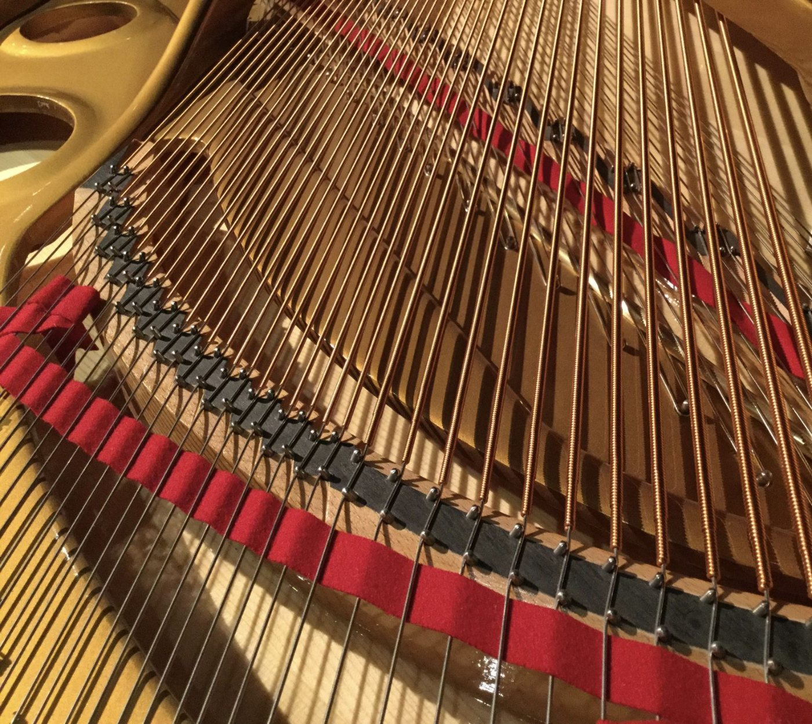
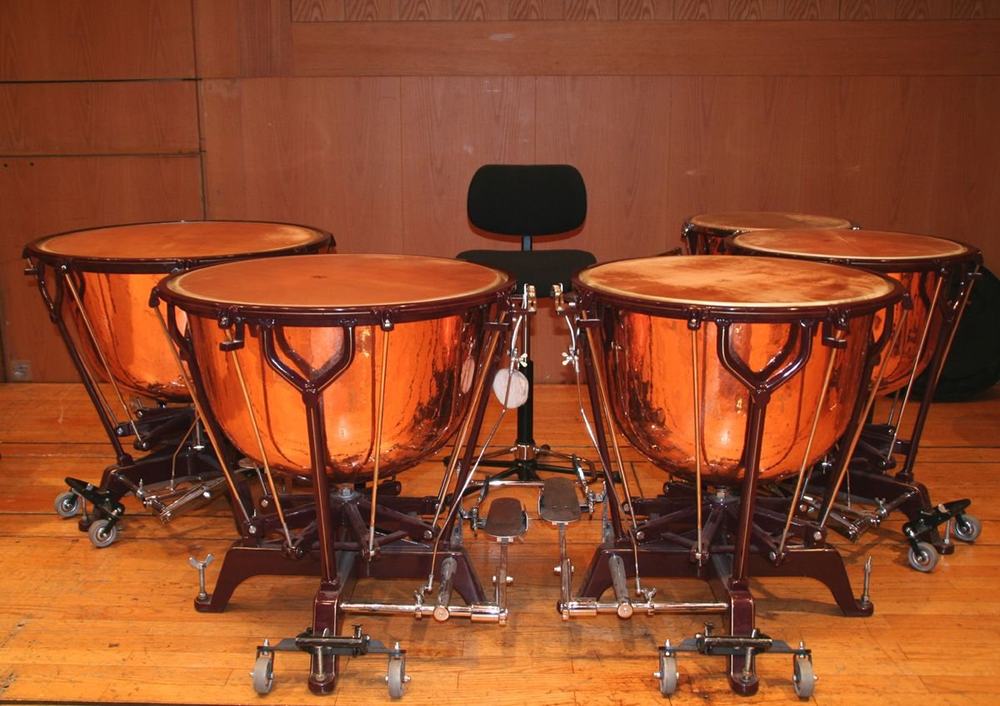

악기
음악당이 가진 피아노 둘과 하프시코드, 팀파니의 사양과 사용료입니다.
피아노 A
콘서트 그랜드

- 길이
- 274 cm
- 건반
- 88
- 들인 해
- 2019년
- 조율 기준
- A = 442 Hz
- 마지막 조율
- 10월 10일(토)
- 사용료
- 200,000원
- 조율료
- 180,000원
피아노 B
세미 콘서트 그랜드
- 길이
- 227 cm
- 건반
- 88
- 들인 해
- 2011년
- 조율 기준
- A = 442 Hz
- 마지막 조율
- 9월 30일(수)
- 사용료
- 120,000원
- 조율료
- 160,000원
하프시코드
2단 건반 프랑스식 복제
- 음역
- FF~f‴ 61건반
- 줄
- 8′ · 8′ · 4′
- 조율 기준
- A = 415 Hz 또는 440 Hz
- 음률
- 발로티 또는 평균율
- 마지막 조율
- 10월 3일(토)
- 사용료
- 150,000원
- 조율료
- 120,000원
팀파니
페달식 4대

- 지름
- 32 · 29 · 26 · 23인치
- 말렛
- 세 벌
- 들인 해
- 2018년
- 사용료
- 80,000원
조율
피아노는 대관 당일 오전에 음악당 조율사가 A = 442 Hz로 맞춘다. 하프시코드는 바로크 음높이 A = 415 Hz가 기본이고, 다른 악기와 맞출 때는 440 Hz로 바꾼다.
홀 온도 22~24 °C, 습도 45~55 %를 지키고, 악기는 무대 오른쪽 악기실에 둔다.